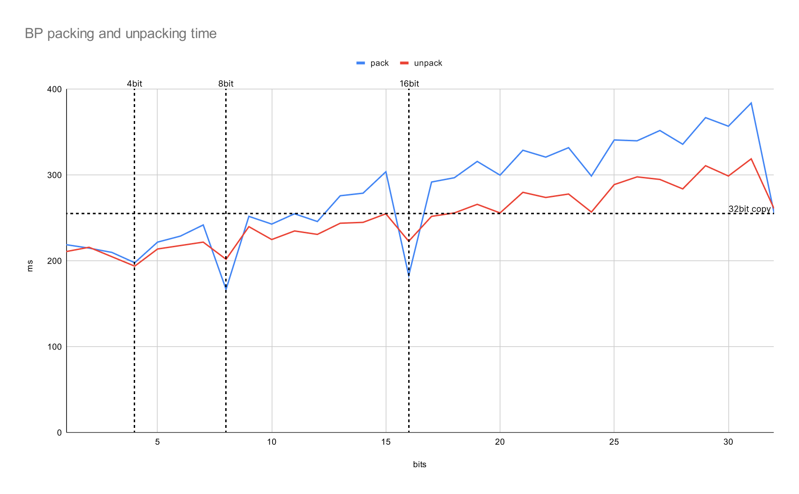

참고한 것들
Bit 포장하기
- 개념적으로는 단순하다. 어떤 정수 값이 있을 때, 그 값을 표현하기에 충분한 최소 개수의 bit 만을 이용 하는 compression 방법이다.
- 보통 정수는 32bit 로 표현되기에, 만약 값들이 0 ~ 65535 사이에 있다면 32bit 대신 16bit 만 사용하면 개꿀이겠다 그쵸?
- 활용 사례도 명확하다. FOR 이나 Delta 처럼 큰 값을 어찌저찌 작은 값으로 표현하는 방법들에는 대부분 BP 가 뒤따른다.
근데 왜 일반적인 상황에서는 안쓸까?
- 더 적은 bit 를 사용하면 더 좋다고 생각하겠지만, 보통 우리가 코딩을 할 때는 인생이 이렇게 흘러가지 않는다.
- 이 BP 는 compression 을 해야 하는 상황에서만 사용된다.
- 그건 왜냐면 보통 “정수” 라 하면 32bit 규격으로 딱 맞춰져 있고, 이렇게 BP 가 적용된 것들을 사용하기 위해서는 불가피하게 이것을 다시 32bit 로 복원해야 하기 때문에, 이 “복원” 에 대한 overhead 가 있기 때문이다.
- 그럼 이 “복원” 에 대한 overhead 는 얼마일까? 이에 관해 이 양반 이 설명해 놓은 글을 소개할까 한다.
BP overhead
- Bit 를 packing 하고 unpacking 하는데에의 overhead 는 두가지 오해가 있을 수 있다:
- Bit packing 하는 것에 대한 overhead 는 32bit int 를 복사하는 것과 유사한 overhead 를 가질 것이다.
- 2의 제곱승 () 의 bit 로 packing, unpacking 하는 것이 그렇지 않은 경우보다 더 좋을 것이다.
- 이것에 대해 위의 블로그 글에서 실험한 결과는 다음과 같다:

출처: 원본 블로그에서 그래프가 안보여 직접 그림
- 가로축은 bit 수, 세로축은 걸린 시간 (ms) 이다. 이때 위의 오해들에 대해 생각해 보자.
- 일단 첫번째 오해는 딱히 그래보이지 않는다. 오른쪽 맨 끝이 32bit 인데, 이때의 값은 packing 의 경우 12bit 언저리, unpacking 의 경우 18bit 언저리랑 비슷하다.
- 이건 생각해 보면 생각보다 간단한 이유일 수 있다.
- 만약 4bit 으로 packing 된 32bit-word 하나를 unpacking 하면 8개의 정수가 튀어나온다.
- 즉, 하나의 packing 된 bit 수가 작을수록, 32bit-word 를 처리했을 때 더 많은 결과가 나오게 되므로 더 빨라지게 된다. 이건 위의 그래프가 우상향하는 것에 대한 방증이다.
- 의 bit 을 사용하는 것에 대한 것은 부분적으로는 맞다. 위의 그래프에서 볼 수 있듯이, packing 의 경우 일때 시간이 급작스럽게 감소하는 것을 볼 수 있다.
- 하지만 unpacking 일 때는 이러한 효과가 미미하다. 즉, unpacking 에 대해서는 이런 특정 bit 수와는 다소 무관한 결과가 나왔다.
- 일단 첫번째 오해는 딱히 그래보이지 않는다. 오른쪽 맨 끝이 32bit 인데, 이때의 값은 packing 의 경우 12bit 언저리, unpacking 의 경우 18bit 언저리랑 비슷하다.
- 물론 이것이 BP 를 사용하는 것이 compression 이 아닌 일반적인 경우에도 더 좋다는 것을 말하는 것은 아니다. 다만 compression 에서 BP 를 사용할 때 고려할 점 정도로 알아두자.
SIMD integration
- 요즘은 SIMD 를 이용해 한번에 여러개를 쭉쭉 처리해 나가는 최적화도 한다.
- 이것과 관련해서는 FOR + BP 를 SIMD 로 최적화한 C++ 라이브러리 를 참고하자.
- 이 SIMD 로 병렬적으로 처리하기 쉽게 하게 하기 위해 packing 된 bit 를 저장하는 새로운 layout 이 제안되었는데, 그것이 Interleaved Bit-Packing 이다.